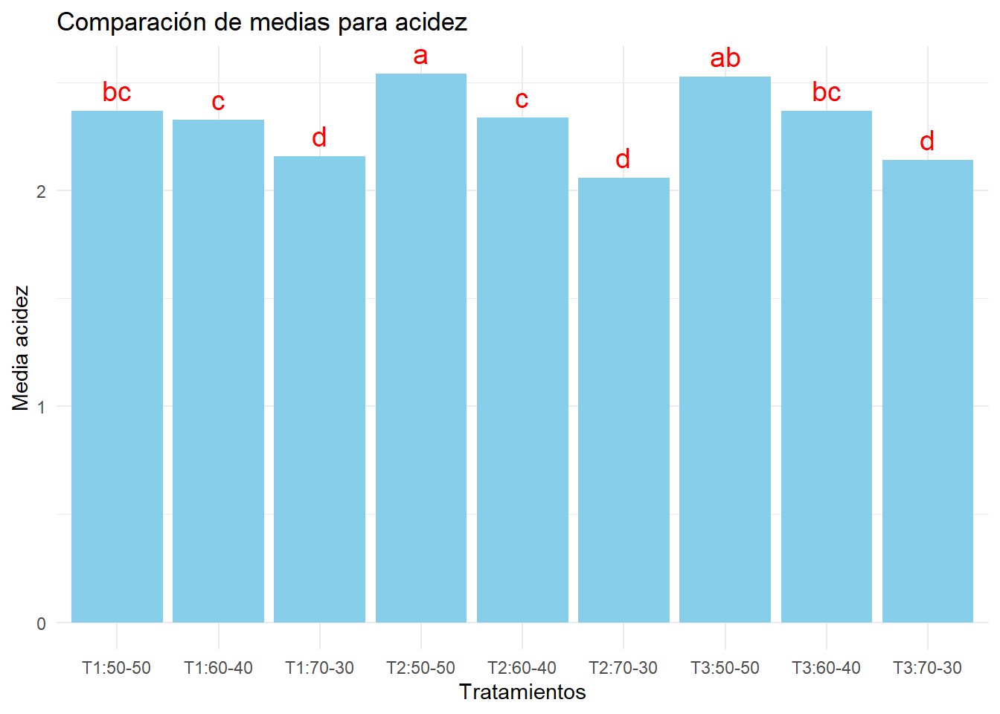

# Para cada variable respuesta Y (ph, brix, acdz, g_alc) se ajusta:# # Y_ijk = μ + A_i + B_j + (AB)_ij + ε_ijk# Donde:# μ = media general# A_i = efecto del i-ésimo nivel del factor A (fer_dias)# B_j = efecto del j-ésimo nivel del factor B (propormn)# (AB)_ij = efecto de la interacción entre ambos factores# ε_ijk = error experimental aleatorio ~ N(0, σ²)
#anova para pH
modelo_acdz <-aov( acdz~ fer_dias * propormn, data = fb)summary(modelo_acdz)
tukey_acdz <-HSD.test(modelo_acdz, trt =c("fer_dias","propormn"), group =TRUE)# Preparar datos para gráficodf_medias <- tukey_acdz$groupsdf_medias <- df_medias %>% tibble::rownames_to_column(var ="trat")# Renombrar la primera columna de medias a "media"colnames(df_medias)[2] <-"media"# Revisarprint(df_medias)
trat media groups
1 T2:50-50 2.543333 a
2 T3:50-50 2.526667 ab
3 T1:50-50 2.370000 bc
4 T3:60-40 2.370000 bc
5 T2:60-40 2.340000 c
6 T1:60-40 2.330000 c
7 T1:70-30 2.160000 d
8 T3:70-30 2.143333 d
9 T2:70-30 2.060000 d
grafico de barras
ggplot(df_medias, aes(x = trat, y = media)) +geom_bar(stat ="identity", fill ="skyblue") +geom_text(aes(label = groups), vjust =-0.5, color ="red", size =5) +labs(title ="Comparación de medias para acidez",x ="Tratamientos",y ="Media acidez") +theme_minimal()

#grafico lineal
ggplot(fb, aes(x = fer_dias, y = acdz, color = propormn, group = propormn)) +# Línea de las mediasstat_summary(fun = mean, geom ="line", linewidth =1.2) +stat_summary(fun = mean, geom ="point", size =3) +stat_summary(fun.data = mean_se, geom ="errorbar", width =0.2) +# Etiquetas y estilolabs(title ="Evolución de la acidez (acdz) según tiempo y proporción",x ="Tiempo de fermentación (días)",y ="Acidez titulable (%)",color ="Proporción\nMucílago/Naranjilla" ) +theme_minimal(base_size =14) +theme(legend.position ="top", plot.title =element_text(face ="bold", hjust =0.5) )